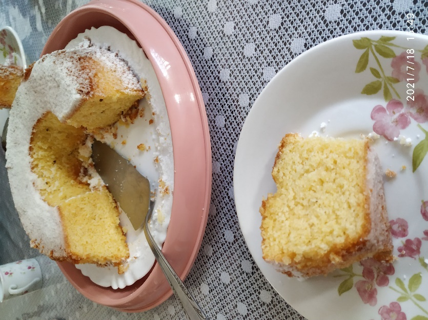

Bolo Rápido de Fubá
Ingredientes
- 4 ovos
- 2 xíc. de açúcar
- 1 xíc. de óleo
- 1 xíc. de farinha de trigo
- 1 xíc. de fubá
- 1 xíc. de leite fervendo
- 1 colher de fermento
Modo de Preparo
Aquecer o forno. No liquidificador colocar o óleo, os ovos, o açúcar, bater um pouco e depois acrescentar o leite e os demais ingredientes secos. Despejar sobre uma forma untada com furo no meio e levar para assar. Quando estiver assado polvilhe com uma mistura de canela com açúcar e deixe no forno mais uns cinco minutos.
Obs.: ideal fazer de véspera
